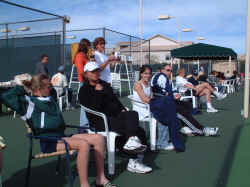
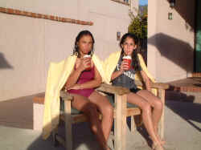
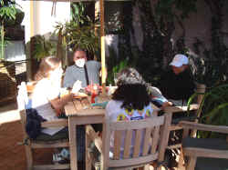
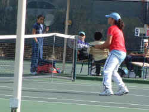

|

Too bad the same player doesn't show up for a tennis
match each time she plays. Liz lost her match in the quarterfinals against Christina Visico 6-2,
6-2. Visico was determined and persistent. Unfortunately, Liz was flat playing the Californian.
That's tennis folks! We are all very proud of Liz making the quarterfinals in her first 14s Super
Nationals. The loss in the main draw put her into the back draw against the number one seed
Brittany Larson.

Did we really have a pizza
party New Year's Eve? Juliana Naso and her dad Richie came over to our condominium with some pizza
and red wine. We supplied the salad, champagne and desserts. Earlier in the day Liz went swimming
with Juliana at The Westin Look Hotel where they are staying. The had a fine time splashing in the
water and shooting hoops at a water basket. We did not last until the ball dropped at Times Square.
The wine and a lumpy, soft bed had taken it's toll on Richie, so they left about 9:30. I zipped
over to the El Conquistador Hotel where the Pro Stringing Circuit are set up in a room to re-string
the multiple racquets that break strings during the tournament. Liz had two racquets there and I
was on the road home when the clock struck ten here, but midnight in New York, the only place it
really counts:) for New Year's Eve that is.
|
|
Sometimes you've got to hunt down
the humor. One of the lady umpires here had an unfortunate accident in her hotel room just before
the tournament began. She passed out in the shower and had a bad fall. She was wearing a sling for one arm had a band-aid over one eye.

Dorothy and I were standing with Richie Naso when
we made the mistake of asking her what happened. The lady went on and on in bloody detail, drop by
drop of blood, stitch by stitch at the hospital. The story was endless, finally finishing with the
image of the elderly umpire halfway in the bath tub draped in the shower curtain; finishing only
after many polite hints from all of us that maybe story should finish. All the blood in the bathtub
was rather reminiscent of Psycho. Finally, the subject was changed to all of our relief. Just then,
Juliana Naso, Richie's daughter ambled over, looked at the lady umpire and innocently asked her
what happened. Richie, Dorothy and I simultaneously jumped ten feet away to the points of an
imaginary isosceles triangle exclaiming in unison "Not again!" The umpire looked from one
to the other of us and turned to Juliana and began her story all over again. We think it was the
condensed version but we kept our distance out of ear shot.
In the back draw against Brittany Larson, a very solid
player who is top five in the country, Liz gave it what she had, but could not keep consistent
control over her emotions. In the three hour match, that probably was the difference. Liz was up in
the first set 4-1, but got nervous and emotional after every miss and wound up losing 6-4. She
regained her composure and fought hard during the second set and was able to pull it out 6-4.
Coming out for the third set, Liz looked strong in the all important first game, but after winning
it, she got nervous and out of control again. She battled back to 2-3 and had opportunities in that
next key game, but lost it. The 4-2 game was similar; opportunities and deuces and ad points, but a
lost game. The final set wound up 6-2. It was mostly a good performance against a very fine player.
 |